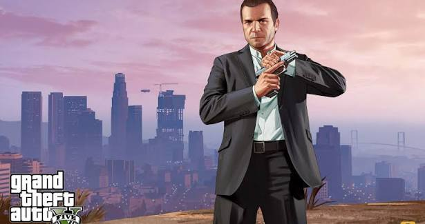
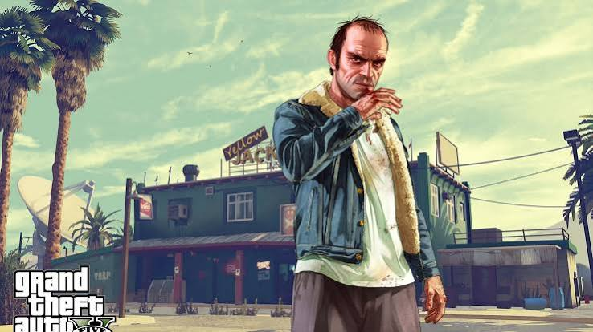
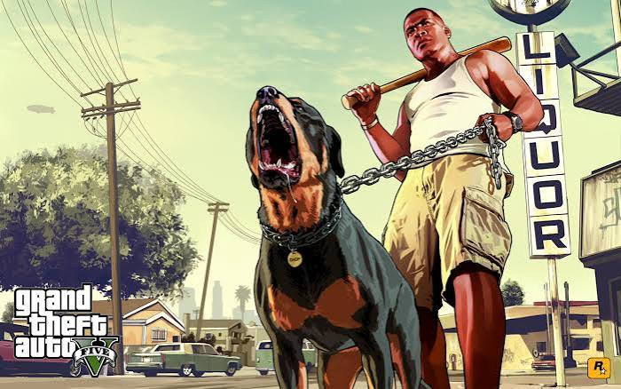
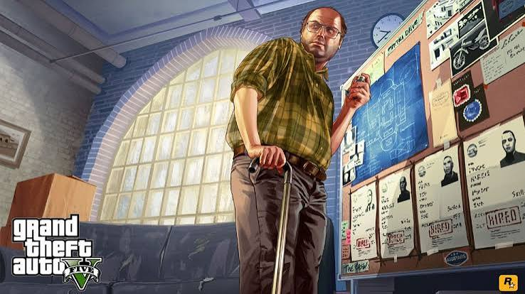
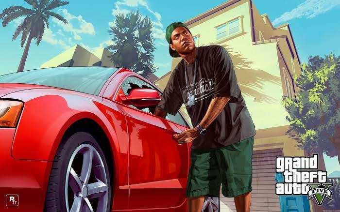
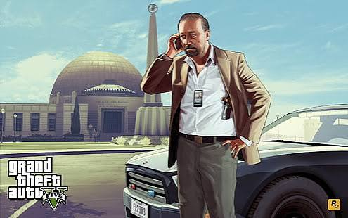
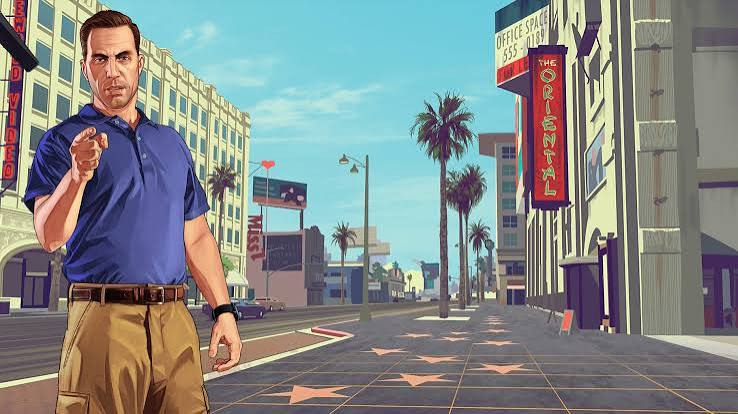
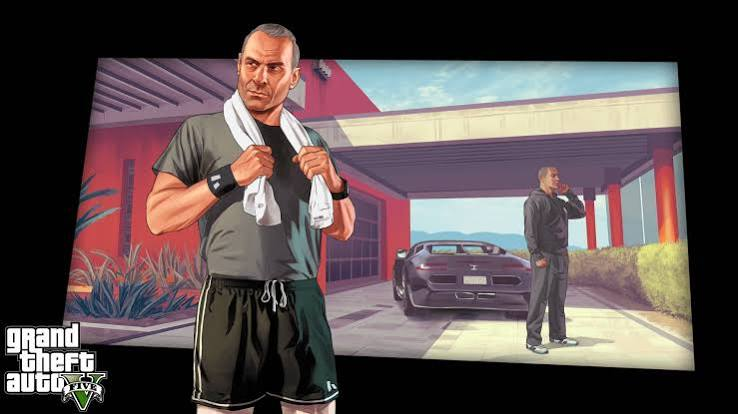
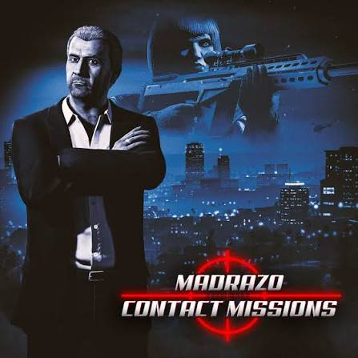
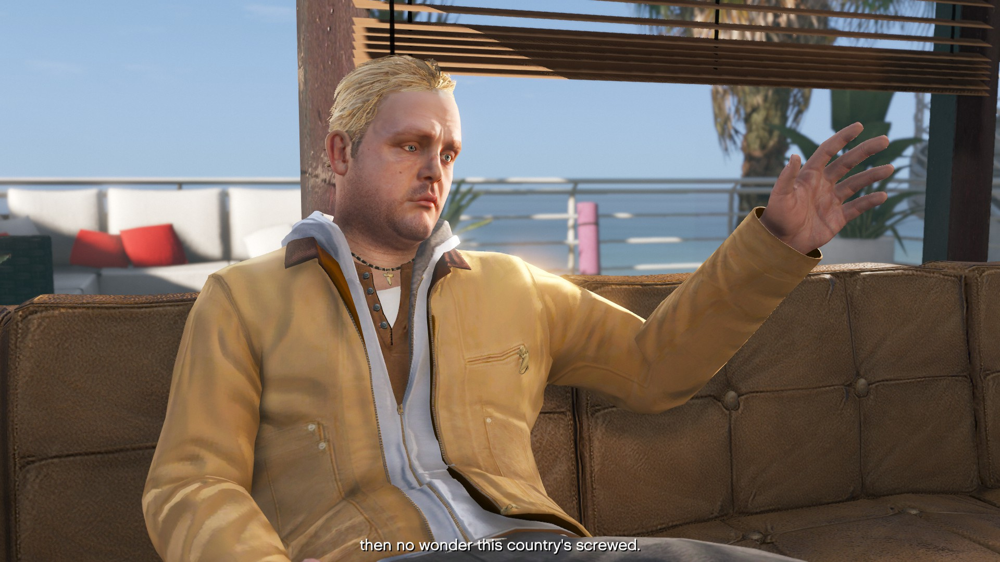

No GTA V, há uma quantidade incontável de personagens diferentes, só que irei apresentar um breve
resumo dos personagens mais relevantes para a história.
Personagens principais:

GTA V - Michael De Santa
Michael De Santa: É um ex-criminoso que participou de vários assaltos no passado. Depois de
fazer um acordo com o FIB para forjar sua morte,
ele passou a viver tranquilamente com sua família. Porém, devido a alguns problemas pessoais, acaba
voltando para o mundo do crime.

GTA V - Trevor Philips
Trevor Philips: É um antigo parceiro de Michael e Brad. Ele é conhecido por ser
extremamente impulsivo e violento. Trevor acreditava que Michael e Brad tinham morrido no
assalto de Ludendorff, mas depois descobre que Michael estava vivo e fica extremamente
irritado por ter sido enganado.

GTA V - Franklin Clinton
Franklin Clinton: É um jovem que trabalha recuperando carros para uma concessionária.
Ele conhece Michael depois de tentar recuperar o carro de Jimmy e, após alguns
acontecimentos, os dois acabam ficando amigos. Franklin começa a participar dos crimes de
Michael e vai ficando cada vez mais envolvido com o mundo do crime.
Persoangens relevantes:

GTA V - Lester Crest
Lester Crest: É um velho conhecido de Michael que possui muitos conhecimentos em
tecnologia e planejamento. Ele ajuda Michael, Franklin e Trevor a planejarem alguns dos
maiores assaltos do jogo.

GTA V - Lamar Davis
Lamar Davis: É o melhor amigo de Franklin e também está envolvido com o mundo do
crime. Ele costuma se meter em vários problemas, fazendo com que Franklin precise ajudá-lo
em algumas situações.

GTA V - Dave Norton
Dave Norton: É um agente do FIB que fez um acordo
com Michael para forjar sua morte. Ele ajuda Michael a manter sua nova identidade e também acaba
envolvendo ele em alguns trabalhos para o governo.

GTA V - Steve Haines
Steve Haines: É um agente do FIB que
utiliza Michael, Franklin e Trevor para realizar algumas operações. Ele acaba entrando em conflito
com os três por causa de seus próprios interesses.

GTA V - Devin Weston
Devin Weston: É um empresário muito rico que acaba utilizando Michael, Franklin e
Trevor para realizar alguns trabalhos. Com o passar da história, ele acaba se tornando um
dos principais inimigos dos protagonistas.

GTA V - Martin Madrazo
Martin Madrazo: É um chefe de cartel que entra em conflito com Michael depois que sua
mansão é destruída. Para conseguir pagar a dívida causada pelo prejuízo, Michael precisa
voltar a realizar trabalhos criminosos.

GTA V - Brad Snider
Brad Snider: Era parceiro de Michael e Trevor durante os assaltos. Ele participa do
assalto de Ludendorff, mas acaba sendo morto durante a fuga. Trevor passa boa parte da
história acreditando que Brad estava preso.